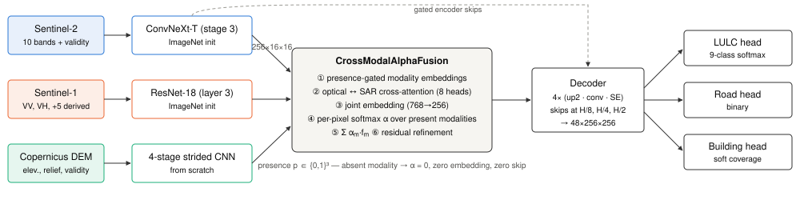
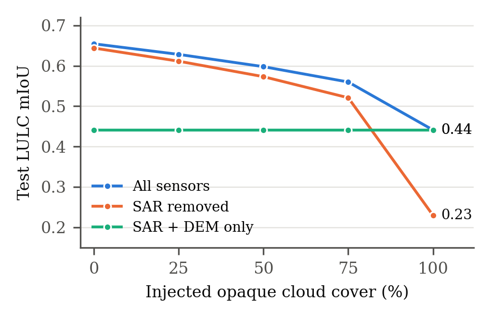
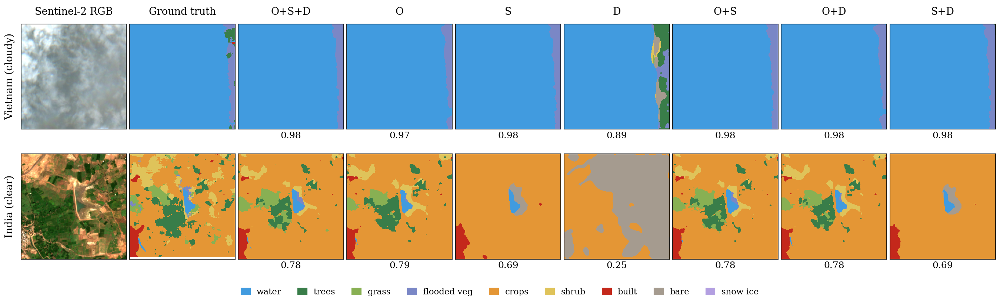
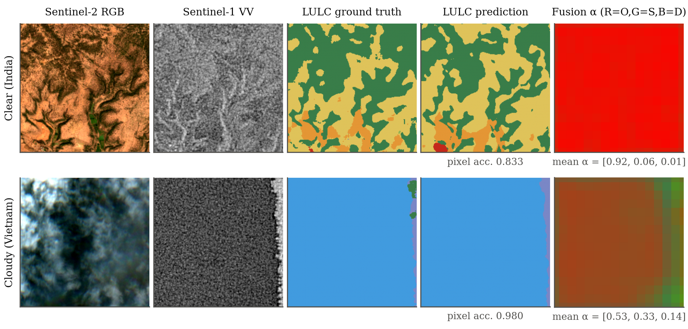

Optical satellites go blind under cloud — and fused models don't notice
Radar sees through cloud, so combining sensors should fix this. In practice a network trained mostly on clear imagery learns that optical alone is enough, and ignores everything else.
of tiles in our first archive had essentially cloud-free optical imagery, so the model never needed radar.
was that model's radar weight, with or without cloud. The fusion never adapted.
of radar per tile. A single acquisition leaves radar alone much weaker than optical, so the model has no easy reason to use it.
Three encoders, one presence-aware fusion, three maps

19.37 M parameters, 31.4 GFLOPs per 256 × 256 tile. Each sensor gets its own encoder; the fusion module weights them per pixel; one decoder feeds all three tasks.
A specialist per sensor
ConvNeXt-Tiny for optical, ResNet-18 for radar, a small CNN for elevation. Each maps its sensor into the same 256-channel space.
Absent means absent
A missing sensor gets no embedding, no attention, zero weight and no skip connection. A per-pixel softmax splits trust among the sensors that are actually there.
Teach it that optical fails
Real cloud masks are injected into clear tiles, whose labels stay correct underneath, alongside sensor dropout and per-sensor auxiliary losses.
Graceful degradation, not collapse
Held-out test set: 1,937 tiles from 137 locations the model never trained on. Cloud is injected over the clear image at increasing coverage.
| Cloud cover | LULC accuracy | mIoU | mIoU without radar | Optical weight | Radar weight | Elevation weight |
|---|---|---|---|---|---|---|
| 0% | 0.843 | 0.654 | 0.644 | 0.866 | 0.101 | 0.032 |
| 25% | 0.824 | 0.628 | 0.611 | 0.819 | 0.137 | 0.044 |
| 50% | 0.801 | 0.598 | 0.573 | 0.732 | 0.204 | 0.064 |
| 75% | 0.774 | 0.560 | 0.521 | 0.594 | 0.311 | 0.095 |
| 100% | 0.664 | 0.441 | 0.230 | 0.000 | 0.733 | 0.268 |
On a 1,752-tile subset excluding every coordinate shared with training or validation, all metrics agree within 0.01.

The gap between the blue and orange lines is what radar contributes. It grows with cloud cover, from 0.01 mIoU in clear sky to 0.21 under full cover.
| Sensors (clear sky, test) | LULC accuracy | mIoU | Road IoU | Building IoU |
|---|---|---|---|---|
| Optical | 0.829 | 0.635 | 0.346 | 0.322 |
| Radar | 0.601 | 0.383 | 0.215 | 0.206 |
| Elevation | 0.466 | 0.229 | 0.000 | 0.000 |
| Optical + radar | 0.840 | 0.646 | 0.354 | 0.332 |
| Optical + elevation | 0.835 | 0.644 | 0.347 | 0.326 |
| Radar + elevation | 0.646 | 0.424 | 0.217 | 0.210 |
| All three | 0.842 | 0.652 | 0.355 | 0.335 |
Sensors are switched off through the model's presence flags, so a removed sensor gets exactly zero weight. 19.4 M parameters, 31.4 GFLOPs per 256 × 256 tile.

The same model run with every combination of sensors. On the cloudy tile (top), radar alone matches all three sensors at 0.98 pixel accuracy. On the clear tile (bottom), optical carries the fine detail; radar alone recovers the layout but not the vegetation texture.

The fusion-weight map (right column, red = optical, green = radar, blue = elevation) is almost pure optical in clear sky, and turns toward radar and elevation under cloud.
A multi-continent, cloud-aware archive
Co-registered 256 × 256 tiles at 10 m from Africa, Asia and Latin America, 2017–2023, split by location so test regions are never seen in training.
Labels: Dynamic World land cover (9 classes), OpenStreetMap roads, building-footprint coverage. Unlabelled pixels are masked out of every loss rather than counted as negatives. The archive is on Kaggle as aether-real-cloud-multimodal-eo.
Run AETHER
Install
git clone https://github.com/Praneeth1-O-1/AETHER.git
cd AETHER
pip install -r requirements.txtTrain, predict, evaluate
# set DATASET_ROOT and CHECKPOINT in settings.py
python run_train.py
python run_predict.py
python run_evaluate.pyFull reference: README · architecture and training details.
What it doesn't do yet
- Single-date radar. One Sentinel-1 acquisition per tile limits how much radar alone can recover.
- Roads and buildings. IoU is about 0.35; thin structures remain hard at 10 m.
- Orbit direction. Not recorded in the archive, so that radar input is unused.
- Small split leak. 185 test tiles share coordinates with training or validation tiles; results on the leak-free subset are the same within 0.01.